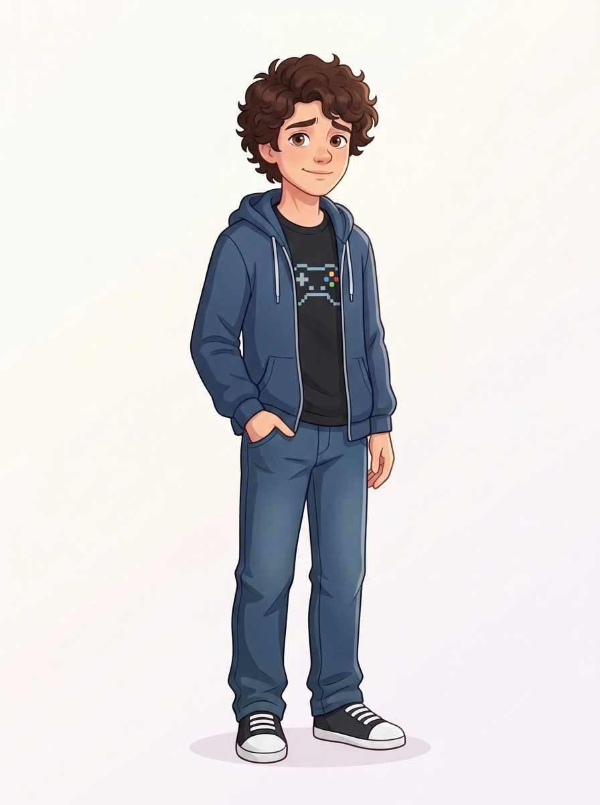
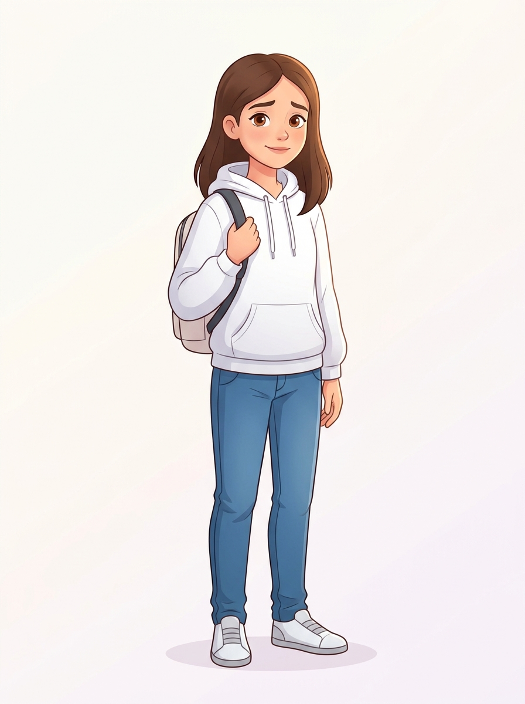

O cyberbullying não é apenas uma brincadeira: ele machuca de verdade. Conheça as histórias do Henrique e da Sara, aprenda a reconhecer os sinais e jogue o nosso quiz interativo para saber como agir!
Entender a dor do outro é o primeiro passo para criar uma rede mais segura.

Henrique é um rapaz de 16 anos que gosta de jogar videogame e conversar com os amigos pela internet. Um dia, durante uma partida online, começa a receber mensagens ofensivas de outros jogadores, que riem de sua aparência e da forma como joga.
No início, Henrique tenta não dar importância, mas as ofensas continuam. Mais tarde, descobre que criaram um grupo nas redes sociais para rir dele. Fica triste, perde a vontade de jogar e começa a evitar os amigos.

Sara é uma adolescente de 15 anos que adora desenhar, ouvir música e conversar com os amigos nas redes sociais. Um dia, ao entrar no telemóvel, percebe que alguém publicou uma fotografia sua com comentários maldosos e humilhantes.
No início, Sara tenta ignorar, mas os comentários começam a aumentar. Alguns colegas partilham a publicação e outros começam a rir-se dela na escola. Sara sente-se triste, envergonhada e começa a afastar-se dos amigos.
Coloque-se no lugar deles e descubra qual é a escolha mais saudável e corajosa.
Lembre-se: a culpa NUNCA é de quem sofre a agressão.
Não apague as mensagens de imediato. Tire prints (capturas de tela) mostrando o nome de usuário, a data, a hora e o link da postagem.
Quem pratica bullying quer atenção e reação. Não responda no calor do momento. Bloqueie o agressor e denuncie o perfil na própria rede ou jogo.
Conte imediatamente para os pais, responsáveis, professores ou orientação da escola. Guardar tudo para si só faz o peso aumentar.
Conversar com um psicólogo ou terapeuta ajuda a recuperar a autoestima e a entender que o problema está em quem ataca, e não em você.